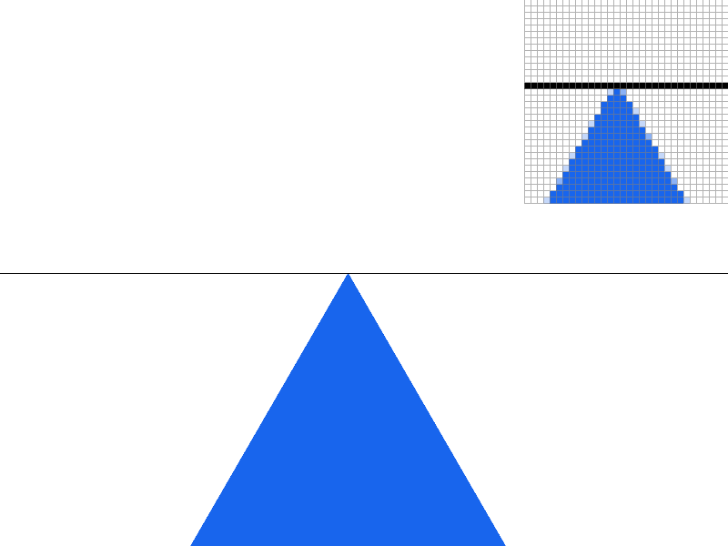
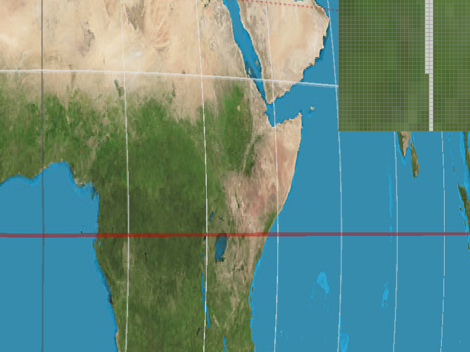
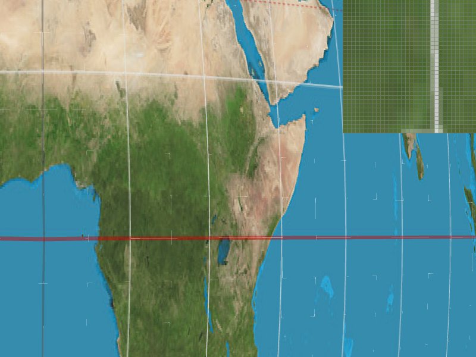

CS184 summer 2025 Homework 1 Write-Up
Link to webpage: https://cal-cs184.github.io/hw-webpages-su25-Luke-liyy/hw1/
Link to GitHub repository: https://github.com/cal-cs184/hw-webpages-su25-Luke-liyy
If you want to see the PDF version of the report, you can download it by clicking on the link below, or just view it in your browser:
Overview
In this homework, I implemented a complete rasterization rendering pipeline, including triangle rasterization, antialiasing via supersampling, geometric transforms, barycentric coordinate interpolation, and texture mapping. Through this project, I gained a deep understanding of the fundamental principles of rasterization in computer graphics, learned how to handle aliasing artifacts, and implemented efficient texture mapping and filtering techniques. The most interesting discovery was how supersampling approximates true pixel coverage by increasing sample points to achieve smooth antialiasing effects.
Task 1: Drawing Single-Color Triangles
1.1 How to rasterize triangles in your own words
1.1.1 Compute the axis-aligned bounding box (AABB)
I take min/max of the three vertices in screen space, then shift by -0.5 px so that pixel indices represent pixel centers. Finally, I clamp the range to the framebuffer.
1.1.2 Edge-Function Pre-computation
Each directed edge ei = (vi, vj) is represented by a linear function:
e(x,y) = ax + by + c
with a = yi - yj, b = xj - xi, c = xi*yj - xj*yi.
1.1.3 Consistent Orientation
The signed doubled area:
A2= (x1 - x0)(y2 - y0) - (y1 - y0)(x2 - x0)
1.1.4 Scanning the Bounding Box
The code iterates row by row through every pixel whose centre lies inside the bounding box. For each (px, py), the centre coordinates are (xs, ys) = (px + 0.5, py + 0.5). Computing e0, e1, e2 requires three multiply-add operations per edge, for a total of nine FLOPs, followed by three comparisons. If the point passes the edge test, fill_pixel writes the colour to every subsample of that pixel.
1.2 Why the Algorithm Is No Worse than a Full AABB Scan
- I iterate over exactly the pixels inside the AABB, which is the same set examined by a naïve "sample-every-point-in-bbox" approach.
- Each pixel entails only three multiply-adds and three comparisons. No costly operations (div, sqrt) are used.
- Therefore the complexity is O(bbox pixels) in time and O(1) in extra memory.
1.3 Screenshot of basic/test4.svg with pixel inspector
Screenshot of basic/test4.svg with pixel inspector showing triangle rasterization
About Extra Credit
I tried to complete the extra credit for task 1, but ultimately was not able to finish it. To measure the time taken, I added the following code at line 307 in src/drawrend.cpp. However, I found that the time required to render the same image was unstable with each run. Can this kind of timing be used for comparison?
auto t0 = std::chrono::high_resolution_clock::now();
svg.draw(software_rasterizer, ndc_to_screen * svg_to_ndc[current_svg]);
auto t1 = std::chrono::high_resolution_clock::now();
double ms = std::chrono::duration<double, std::milli>(t1 - t0).count();
std::cout << ms << " ms\n";Task 2: Antialiasing by Supersampling
2.1 Supersampling algorithm & data structures
2.1.1 sample_rate
This integer controls how many sub-samples live inside each pixel—1, 4, 9, 16, and so on. You can change it at run time via set_sample_rate(), letting you trade rendering speed for image quality. Every buffer size allocation and every loop that iterates over sub-samples is driven by this value.
2.1.2 sample_buffer
sample_buffer is the central data structure that stores the intermediate colors of all sub-samples. It is a vector<Color> whose length equals width × height × sample_rate, reserving sample_rate color slots for every pixel on the screen. The index scheme is simple: locate the pixel first, then offset by the sub-sample index—pixel_id * sample_rate + sub_id. During rasterization, we write directly into this buffer; we do not touch the 8-bit RGB framebuffer until the very end.
2.1.3 Pipeline for a triangle
- Bounding box clipping.
- Per-sub-sample test.
- Iterate over all sub-samples inside each pixel.
- Evaluate edge functions at the floating-point positions.
- If inside, write the color directly to
sample_buffer.
- Resolve. Average the n samples back to the 8-bit RGB framebuffer in
resolve_to_framebuffer().
2.2 Why supersampling is useful
- Aliasing: Single-point sampling cannot estimate partial coverage → "jaggies".
- Coverage approximation: With ≥4 samples, we can approximate the true area coverage by k/n.
- Renderer-agnostic: Pure geometry approach, independent of texture filters.
2.3 Modifications to the rasterization pipeline
| Location | Change |
|---|---|
| fill_pixel | For points/lines, write the same color for every sub-sample. |
| rasterize_triangle | Added nested loops over sub-samples; kept fast path when n==1. |
| set_sample_rate & set_framebuffer_target | Re-allocate sample_buffer. |
| resolve_to_framebuffer | Average n sub-samples and write back to the RGB framebuffer. |
2.4 Using supersampling to antialias triangles
For each pixel we count hit samples k.
- Completely inside: k=n.
- Completely outside: k=0.
- Edge pixels: 0<k<n. Final color = triangle_color × k/n + background × (n-k)/n.
When n increases 1 → 4 → 16, the coverage levels become finer (25%, 50%, 75%, …) and the staircase edge progressively turns into a smooth gradient.
2.5 Results & explanation
The pixel inspector is placed over the skinny tip of the blue triangle:
- 1× Only two colors (blue/white) → harsh jaggies.
- 4× Mixed shades appear; 25/50/75% coverage soften the edge.
- 16× Even finer coverage steps; edge looks virtually smooth at normal viewing distance. Frame-rate drops because the inner loops run 16× more often.
|
|

|
|
|
|
Additional Notes
I completed the entire assignment under WSL. When I open the file with the default viewing parameters using ./draw ../svg/basic/test4.svg I see a single blue pixel spilling outside the black frame. However, after I zoom in or out with the mouse wheel, all blue pixels are confined strictly within the frame.
Task 3: Transforms
3.1 Modified Robot
This picture looks like a robot dancing, though it could also be seen as throwing a softball.

Modified robot performing a dance or throwing a softball
For Extra Credit
I implemented viewport rotation functionality using keyboard controls:
Store the Rotation Angle
Add a float view_rotation field to the DrawRend class to store the current viewport rotation angle (in degrees). Initialize it to 0 in the constructor, init(), and view_init().
Listen for Keyboard Events
In the switch statement inside keyboard_event, add:
case 'E': view_rotation -= 5.f; redraw(); break; // clockwise
case 'Q': view_rotation += 5.f; redraw(); break; // counterclockwiseEach key press updates the rotation angle and triggers a redraw.
Construct the Rotation Matrix
At the beginning of redraw(), create:
Matrix3x3 R = translate(0.5, 0.5) *
rotate(view_rotation) *
translate(-0.5, -0.5);This applies a rotation around the center of the NDC (Normalized Device Coordinates) space, which is at (0.5, 0.5).
Insert Into the Matrix Stack
Replace the original drawing transformation, ndc_to_screen * svg_to_ndc with:
Matrix3x3 total = ndc_to_screen * R * svg_to_ndc[current_svg];Apply this total matrix to all vertices (both the SVG content and the border lines), so the entire canvas rotates as the angle changes.
Reset on View Initialization
In view_init(), reset view_rotation to 0 to ensure that pressing the space bar not only resets the view but also clears any rotation.
rotated robot
Task 4: Barycentric coordinates
4.1 Explanation of Barycentric Coordinates
Inside a triangle, any point can be thought of as a blend of the three vertices in certain "proportions"; these three proportions are the point's barycentric coordinates, denoted (w₀, w₁, w₂).
Barycentric coordinates provide a natural way to interpolate vertex attributes (such as colors, texture coordinates, or normals) across the surface of a triangle. Each coordinate represents the "weight" or influence of the corresponding vertex on the current point.
As shown in the figure above, you can view it by running: ./draw ../docs/task4.svg
Triangle demonstrating barycentric coordinate color interpolation
4.2 Screenshot of svg/basic/test7.svg
Screenshot of svg/basic/test7.svg showing smooth color interpolation
Task 5: "Pixel sampling" for texture mapping
5.1 What is Pixel Sampling?
During texture mapping, we need to determine the color of each pixel on the screen based on a continuous texture coordinate (u, v). Since the texture is stored as a discrete grid of texels, we must "sample" from this grid—this process is called pixel sampling. The choice of sampling method directly affects image quality, influencing sharpness, smoothness, and the presence of artifacts such as jaggies or moiré patterns.
5.2 Implementation Overview
- In rasterize_textured_triangle, barycentric weights are computed and used to interpolate vertex UVs for every subsample, resulting in the target texture coordinate (u,v).
- A SampleParams structure is filled and passed to the Texture at mip level 0.
- The Texture::sample function dispatches to either sample_nearest or sample_bilinear based on the psm parameter:
- Nearest: Converts (u,v) to texel space, rounds to the nearest integer (tx,ty), and fetches the single texel using get_texel.
- Bilinear: Fetches the four neighboring texels surrounding (x,y), computes the horizontal (sx) and vertical (sy) interpolation weights, and performs two linear interpolations to blend the colors.
5.3 Comparison Screenshots
|
|
|
|

|

|
5.4 Discuss the difference
A large difference emerges when a screen pixel spans fractions of a texel—such as during strong magnification of high-frequency textures or thin diagonal edges—because nearest-neighbor snaps to one texel while bilinear interpolates among four. The resulting texel-to-texel discontinuities produce jagged aliasing and moiré in nearest sampling, whereas bilinear's low-pass blend smooths those high-frequency transitions.
Task 6: "Level Sampling" with mipmaps for texture mapping
6.1 What "level sampling" means
When the same texture is projected onto screen-space, one screen pixel can cover anything from less than one texel (magnification) to hundreds of texels (strong minification, e.g. a checkerboard far in the distance).
Level sampling decides which pre-filtered "mipmap" level of the texture we should read so that the texel density roughly matches the pixel footprint.
6.2 Comparison Table
| Technique you turn up | Speed (per shaded pixel) | Extra memory | Antialiasing ability |
|---|---|---|---|
| Pixel sampling | Nearest = 1 texel fetch Bilinear = 4 fetches |
none | Removes blockiness while magnifying, but cannot fight minification aliasing |
| Level sampling | L_NEAREST ≈ 1× pixel cost of chosen psm L_LINEAR ≈ 2× pixel cost of psm |
All mip levels ≈ 33% extra texture RAM | Eliminates high-frequency flicker when the texture shrinks; tri-linear further hides discontinuities between levels |
| Samples-per-pixel | × sample_rate | A larger multi-sampling cache | Kills jagged edges on geometry and picks up true pixel coverage; also improves isotropic texture aliasing, but less efficient for heavy minification |
6.3 Screenshot Comparisons

|

|

|

|